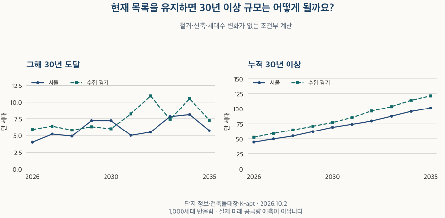

아파트의 진화 · 준공 30년
2030년 30년 이상 아파트는 몇 세대일까? 현재 목록으로 계산하기
현재 단지 목록을 유지하면 2030년 30년 이상 아파트는 서울 약 69만 2,000세대, 수집 경기 약 77만 1,000세대입니다. 연간 진입과 누적 규모, 서로 다른 분모와 철거·신축 미반영의 한계를 비교합니다.
분석 기간 · 현재 목록 2026.10.2 · 조건부 계산 2026~2035년 | 자료 기준일 · 공식 자료 범위 확인 2026-10-16
‘2030년이면 오래된 아파트가 얼마나 많아질까?’를 계산하려면 먼저 가정을 정해야 합니다. 지금의 단지 목록과 세대수를 그대로 두고 준공 연도와의 차이만 늘리는 계산은 가능합니다. 서울·수집 경기 자료로 매년 30년에 도달하는 규모와 30년 이상인 누적 규모를 나눠 봤습니다.
그해 30년 도달과 누적 30년 이상은 어떻게 다른가요?
‘그해 30년 도달’은 해당 연도에 준공 연도와의 차이가 처음 30이 되는 집합입니다. ‘누적 30년 이상’은 그 집합과 더 오래된 집합을 모두 합친 값입니다. 2030년의 연간 진입은 2000년 준공, 누적은 2000년까지 준공한 집합을 모두 포함합니다. ‘30년 초과’라고 쓰면 2000년 준공은 빠지므로 같은 뜻으로 바꾸어 쓰지 않습니다.
이 글의 경계는 연도 차이입니다. 실제 준공 월·일로 센 만 30년이나 입주 연차와 다를 수 있습니다. 사용승인일·준공일·입주일을 서로 바꿔 넣지 않았습니다.
2026년의 누적에는 1996년 준공이 이미 들어 있습니다. 2030년까지의 변화를 구하려면 2027~2030년에 새로 들어오는 집합을 더해야 합니다. 2026년 진입을 다시 더하면 중복입니다. 표시값은 반올림했으므로 표의 두 누적을 뺀 값과 반올림한 연간 진입의 합계가 정확히 같지 않을 수 있습니다.
현재 목록에서 2026~2035년의 규모는 어떻게 달라지나요?
기본 집계의 30년 이상 규모는 2026년 서울 약 44만 7,000세대·수집 경기 약 52만 6,000세대에서, 2035년에는 약 101만 3,000세대·약 121만 3,000세대가 됩니다. 시간이 흐를수록 누적이 늘어나는 것은 이 계산의 정의에서 나오는 결과입니다. 실제 미래 시장에서 확인한 증가 추세가 아닙니다.

| 지역·연도 | 그해 30년 도달 | 누적 30년 이상 | 세대수 비중 | 단지 비중 |
|---|---|---|---|---|
| 서울 · 2026년 | 40,000세대 | 447,000세대 | 25% | 20% |
| 서울 · 2027년 | 52,000세대 | 499,000세대 | 30% | 20% |
| 서울 · 2028년 | 49,000세대 | 548,000세대 | 35% | 25% |
| 서울 · 2029년 | 72,000세대 | 620,000세대 | 35% | 25% |
| 서울 · 2030년 | 72,000세대 | 692,000세대 | 40% | 30% |
| 서울 · 2031년 | 50,000세대 | 742,000세대 | 45% | 35% |
| 서울 · 2032년 | 55,000세대 | 797,000세대 | 50% | 40% |
| 서울 · 2033년 | 78,000세대 | 875,000세대 | 50% | 50% |
| 서울 · 2034년 | 81,000세대 | 956,000세대 | 55% | 65% |
| 서울 · 2035년 | 57,000세대 | 1,013,000세대 | 60% | 70% |
| 수집 경기 · 2026년 | 59,000세대 | 526,000세대 | 20% | 30% |
| 수집 경기 · 2027년 | 64,000세대 | 589,000세대 | 25% | 30% |
| 수집 경기 · 2028년 | 58,000세대 | 648,000세대 | 25% | 35% |
| 수집 경기 · 2029년 | 63,000세대 | 710,000세대 | 30% | 35% |
| 수집 경기 · 2030년 | 60,000세대 | 771,000세대 | 30% | 40% |
| 수집 경기 · 2031년 | 82,000세대 | 853,000세대 | 35% | 40% |
| 수집 경기 · 2032년 | 109,000세대 | 962,000세대 | 40% | 45% |
| 수집 경기 · 2033년 | 74,000세대 | 1,036,000세대 | 40% | 50% |
| 수집 경기 · 2034년 | 105,000세대 | 1,141,000세대 | 45% | 55% |
| 수집 경기 · 2035년 | 72,000세대 | 1,213,000세대 | 50% | 60% |
2030년 한 해에 새로 30년이 되는 규모는 서울 약 7만 2,000세대·수집 경기 약 6만 세대입니다. 누적 약 69만 2,000세대·77만 1,000세대와는 질문이 다릅니다. 연간 진입의 크기는 현재 목록에 남은 해당 준공 연도의 구성에 따라 달라집니다.
가장 큰 한계는 미래에도 지금의 목록이 그대로 남는다는 가정입니다. 철거·단지 통합은 기존 집합을 바꾸고, 신축은 전체 분모를 바꿀 수 있습니다. 현재 목록이 실제로 남아 있는 모든 건물을 빠짐없이 담았는지도 별도 문제입니다. 이 숫자로 미래의 매물·정비사업 물량·신축 희소성·가격을 예측하지 않습니다.
세대수 비중과 단지 수 비중은 왜 다른가요?
단지 한 곳의 무게와 포함하는 집합이 다르기 때문입니다. 2030년 서울의 30년 이상 세대수 비중은 약 40%, 단지 수 비중은 약 30%입니다. 수집 경기는 각각 약 30%와 40%입니다. 같은 ‘오래된 아파트 비중’이라는 말에 서로 다른 숫자가 붙을 수 있습니다.
세대수 비중의 분모는 준공 연도와 양의 세대수를 모두 확인한 단지의 세대수 합계입니다. 단지 비중의 분모는 연도를 확인한 단지 수이며, 세대수 미상 단지도 포함합니다. 따라서 이 차이를 단지 규모 하나의 효과로만 분해한 결과는 아닙니다. 세대수를 모르는 단지를 0세대로 채우지 않았습니다.
기본 집계에서 연도와 세대수를 모두 확인한 단지는 전체 단지의 서울 90~100%, 수집 경기 80~90% 구간입니다. 알려진 세대수 중 연도를 확인한 비중은 두 지역 모두 90~100% 구간입니다. 이 구간이 모든 실제 주택이나 실제 입주 가구를 포괄한다는 뜻은 아닙니다.
자료 범위를 바꾸면 2030년의 답도 달라지나요?
달라집니다. 자료마다 세대수가 다른 단지를 제외하면 2030년의 30년 이상 세대수 비중은 서울 약 35%·수집 경기 약 25%입니다. 면적별 세대수 자료가 확인된 단지만 보면 약 45%·약 30%입니다. 기본 집계의 약 40%·약 30%와 나란히 읽어야 합니다.
면적별 자료 확인 집합은 전체 단지의 서울 20~30%, 수집 경기 50~60% 구간입니다. 기본 집계의 알려진 세대수에서는 각각 80~90%, 90~100% 구간을 포함합니다. 같은 단지의 숫자만 바꾼 실험이 아니라, 비교 대상의 구성도 바뀐 결과입니다. 반올림한 비중이 같아도 실제 집합이나 원래 수치까지 같다는 뜻은 아닙니다.
원천 불일치 제외 · 연도별 비교 펼치기
| 지역·연도 | 그해 30년 도달 | 누적 30년 이상 | 세대수 비중 | 단지 비중 |
|---|---|---|---|---|
| 서울 · 2026년 | 28,000세대 | 299,000세대 | 20% | 15% |
| 서울 · 2027년 | 34,000세대 | 333,000세대 | 25% | 20% |
| 서울 · 2028년 | 37,000세대 | 370,000세대 | 25% | 20% |
| 서울 · 2029년 | 52,000세대 | 422,000세대 | 30% | 25% |
| 서울 · 2030년 | 44,000세대 | 466,000세대 | 35% | 30% |
| 서울 · 2031년 | 31,000세대 | 497,000세대 | 35% | 30% |
| 서울 · 2032년 | 48,000세대 | 545,000세대 | 40% | 40% |
| 서울 · 2033년 | 63,000세대 | 608,000세대 | 45% | 50% |
| 서울 · 2034년 | 75,000세대 | 684,000세대 | 50% | 60% |
| 서울 · 2035년 | 52,000세대 | 736,000세대 | 55% | 70% |
| 수집 경기 · 2026년 | 46,000세대 | 445,000세대 | 20% | 30% |
| 수집 경기 · 2027년 | 49,000세대 | 493,000세대 | 20% | 30% |
| 수집 경기 · 2028년 | 38,000세대 | 531,000세대 | 25% | 35% |
| 수집 경기 · 2029년 | 50,000세대 | 581,000세대 | 25% | 35% |
| 수집 경기 · 2030년 | 42,000세대 | 623,000세대 | 25% | 35% |
| 수집 경기 · 2031년 | 54,000세대 | 677,000세대 | 30% | 40% |
| 수집 경기 · 2032년 | 86,000세대 | 764,000세대 | 35% | 45% |
| 수집 경기 · 2033년 | 52,000세대 | 816,000세대 | 35% | 45% |
| 수집 경기 · 2034년 | 87,000세대 | 903,000세대 | 40% | 50% |
| 수집 경기 · 2035년 | 67,000세대 | 971,000세대 | 45% | 55% |
등록 유형·연도 일치 · 연도별 비교 펼치기
| 지역·연도 | 그해 30년 도달 | 누적 30년 이상 | 세대수 비중 | 단지 비중 |
|---|---|---|---|---|
| 서울 · 2026년 | 27,000세대 | 377,000세대 | 30% | 25% |
| 서울 · 2027년 | 44,000세대 | 421,000세대 | 30% | 30% |
| 서울 · 2028년 | 40,000세대 | 461,000세대 | 35% | 35% |
| 서울 · 2029년 | 58,000세대 | 520,000세대 | 40% | 40% |
| 서울 · 2030년 | 58,000세대 | 578,000세대 | 45% | 45% |
| 서울 · 2031년 | 38,000세대 | 616,000세대 | 45% | 45% |
| 서울 · 2032년 | 36,000세대 | 652,000세대 | 50% | 50% |
| 서울 · 2033년 | 56,000세대 | 708,000세대 | 55% | 55% |
| 서울 · 2034년 | 60,000세대 | 768,000세대 | 55% | 60% |
| 서울 · 2035년 | 42,000세대 | 810,000세대 | 60% | 65% |
| 수집 경기 · 2026년 | 51,000세대 | 446,000세대 | 20% | 20% |
| 수집 경기 · 2027년 | 56,000세대 | 502,000세대 | 20% | 25% |
| 수집 경기 · 2028년 | 53,000세대 | 555,000세대 | 25% | 25% |
| 수집 경기 · 2029년 | 61,000세대 | 616,000세대 | 25% | 30% |
| 수집 경기 · 2030년 | 59,000세대 | 675,000세대 | 30% | 35% |
| 수집 경기 · 2031년 | 81,000세대 | 756,000세대 | 35% | 35% |
| 수집 경기 · 2032년 | 104,000세대 | 859,000세대 | 35% | 40% |
| 수집 경기 · 2033년 | 67,000세대 | 926,000세대 | 40% | 45% |
| 수집 경기 · 2034년 | 97,000세대 | 1,023,000세대 | 45% | 50% |
| 수집 경기 · 2035년 | 66,000세대 | 1,089,000세대 | 45% | 50% |
면적별 세대수 확인 · 연도별 비교 펼치기
| 지역·연도 | 그해 30년 도달 | 누적 30년 이상 | 세대수 비중 | 단지 비중 |
|---|---|---|---|---|
| 서울 · 2026년 | 27,000세대 | 379,000세대 | 30% | 25% |
| 서울 · 2027년 | 44,000세대 | 423,000세대 | 30% | 30% |
| 서울 · 2028년 | 40,000세대 | 463,000세대 | 35% | 35% |
| 서울 · 2029년 | 58,000세대 | 521,000세대 | 40% | 40% |
| 서울 · 2030년 | 57,000세대 | 578,000세대 | 45% | 45% |
| 서울 · 2031년 | 39,000세대 | 616,000세대 | 45% | 45% |
| 서울 · 2032년 | 36,000세대 | 652,000세대 | 50% | 50% |
| 서울 · 2033년 | 56,000세대 | 708,000세대 | 50% | 55% |
| 서울 · 2034년 | 61,000세대 | 769,000세대 | 55% | 60% |
| 서울 · 2035년 | 42,000세대 | 811,000세대 | 60% | 65% |
| 수집 경기 · 2026년 | 51,000세대 | 444,000세대 | 20% | 20% |
| 수집 경기 · 2027년 | 56,000세대 | 499,000세대 | 20% | 25% |
| 수집 경기 · 2028년 | 54,000세대 | 553,000세대 | 25% | 25% |
| 수집 경기 · 2029년 | 61,000세대 | 614,000세대 | 25% | 30% |
| 수집 경기 · 2030년 | 58,000세대 | 672,000세대 | 30% | 35% |
| 수집 경기 · 2031년 | 81,000세대 | 753,000세대 | 30% | 35% |
| 수집 경기 · 2032년 | 103,000세대 | 856,000세대 | 35% | 40% |
| 수집 경기 · 2033년 | 67,000세대 | 924,000세대 | 40% | 45% |
| 수집 경기 · 2034년 | 97,000세대 | 1,020,000세대 | 45% | 50% |
| 수집 경기 · 2035년 | 66,000세대 | 1,086,000세대 | 45% | 50% |
기본 집계의 세대수는 유효한 면적별 자료 전체 합계를 우선하고, 없으면 단지별로 식별할 수 있는 건축물대장 값, 검증한 주거 표제부 합계, 등록 기본정보 순서로 확인했습니다. 일부 면적만 더하거나 같은 주소의 총세대수를 여러 단지에 균등 배분하지 않았습니다.
그렇더라도 건축물대장의 한 주소 범위가 거래에서 같은 단지로 취급되는 모든 동을 포함한다고 보장할 수는 없습니다. 여러 자료가 같은 일부 범위에서 일치할 수도 있습니다. 넓은 목록과 면적 확인 집합을 함께 제시하는 이유입니다. 등록 자료의 유형·준공 연도가 일치하는 집합도 따로 비교했으며, 그 사용승인일로 기본 준공 연도를 교체하지 않았습니다.
조건별 자료 포함 범위 펼치기
| 지역 | 조건 | 선택 단지 | 연도·세대수 확인 단지 | 연도·세대수 확인 세대 | 선택 단지 중 양쪽 확인 | 선택의 알려진 세대수 중 연도 확인 |
|---|---|---|---|---|---|---|
| 서울 | 기본 집계 | 90–100% | 90–100% | 90–100% | 90–100% | 90–100% |
| 서울 | 원천 불일치 제외 | 90–100% | 80–90% | 80–90% | 90–100% | 90–100% |
| 서울 | 등록 유형·연도 일치 | 20–30% | 20–30% | 70–80% | 90–100% | 90–100% |
| 서울 | 면적별 세대수 확인 | 20–30% | 20–30% | 80–90% | 90–100% | 90–100% |
| 수집 경기 | 기본 집계 | 90–100% | 80–90% | 90–100% | 80–90% | 90–100% |
| 수집 경기 | 원천 불일치 제외 | 90–100% | 80–90% | 80–90% | 80–90% | 90–100% |
| 수집 경기 | 등록 유형·연도 일치 | 50–60% | 50–60% | 90–100% | 90–100% | 90–100% |
| 수집 경기 | 면적별 세대수 확인 | 50–60% | 50–60% | 90–100% | 90–100% | 90–100% |
| 종로구 | 기본 집계 | 90–100% | 80–90% | 90–100% | 80–90% | 90–100% |
| 중구 | 기본 집계 | 90–100% | 80–90% | 90–100% | 80–90% | 90–100% |
| 용산구 | 기본 집계 | 90–100% | 90–100% | 90–100% | 90–100% | 90–100% |
| 성동구 | 기본 집계 | 90–100% | 90–100% | 90–100% | 90–100% | 90–100% |
| 광진구 | 기본 집계 | 90–100% | 90–100% | 90–100% | 90–100% | 90–100% |
| 동대문구 | 기본 집계 | 90–100% | 90–100% | 90–100% | 90–100% | 90–100% |
| 중랑구 | 기본 집계 | 90–100% | 90–100% | 90–100% | 90–100% | 90–100% |
| 성북구 | 기본 집계 | 90–100% | 90–100% | 90–100% | 90–100% | 90–100% |
| 강북구 | 기본 집계 | 90–100% | 90–100% | 90–100% | 90–100% | 90–100% |
| 도봉구 | 기본 집계 | 90–100% | 90–100% | 90–100% | 90–100% | 90–100% |
| 노원구 | 기본 집계 | 90–100% | 80–90% | 90–100% | 80–90% | 90–100% |
| 은평구 | 기본 집계 | 90–100% | 90–100% | 90–100% | 90–100% | 90–100% |
| 서대문구 | 기본 집계 | 90–100% | 90–100% | 90–100% | 90–100% | 90–100% |
| 마포구 | 기본 집계 | 90–100% | 90–100% | 90–100% | 90–100% | 90–100% |
| 양천구 | 기본 집계 | 90–100% | 90–100% | 90–100% | 90–100% | 90–100% |
| 강서구 | 기본 집계 | 90–100% | 90–100% | 90–100% | 90–100% | 90–100% |
| 구로구 | 기본 집계 | 90–100% | 90–100% | 90–100% | 90–100% | 90–100% |
| 금천구 | 기본 집계 | 90–100% | 90–100% | 90–100% | 90–100% | 90–100% |
| 영등포구 | 기본 집계 | 90–100% | 90–100% | 90–100% | 90–100% | 90–100% |
| 동작구 | 기본 집계 | 90–100% | 90–100% | 90–100% | 90–100% | 90–100% |
| 관악구 | 기본 집계 | 90–100% | 90–100% | 90–100% | 90–100% | 90–100% |
| 서초구 | 기본 집계 | 90–100% | 90–100% | 90–100% | 90–100% | 90–100% |
| 강남구 | 기본 집계 | 90–100% | 80–90% | 90–100% | 80–90% | 90–100% |
| 송파구 | 기본 집계 | 90–100% | 90–100% | 90–100% | 90–100% | 90–100% |
| 강동구 | 기본 집계 | 90–100% | 90–100% | 90–100% | 90–100% | 90–100% |
| 수원시 장안구 | 기본 집계 | 90–100% | 90–100% | 90–100% | 90–100% | 90–100% |
| 수원시 권선구 | 기본 집계 | 90–100% | 90–100% | 90–100% | 90–100% | 90–100% |
| 수원시 팔달구 | 기본 집계 | 90–100% | 80–90% | 90–100% | 80–90% | 90–100% |
| 수원시 영통구 | 기본 집계 | 90–100% | 80–90% | 90–100% | 80–90% | 90–100% |
| 성남시 수정구 | 기본 집계 | 90–100% | 90–100% | 90–100% | 90–100% | 90–100% |
| 성남시 중원구 | 기본 집계 | 90–100% | 90–100% | 90–100% | 90–100% | 90–100% |
| 성남시 분당구 | 기본 집계 | 90–100% | 70–80% | 90–100% | 70–80% | 90–100% |
| 의정부시 | 기본 집계 | 90–100% | 90–100% | 90–100% | 90–100% | 90–100% |
| 안양시 만안구 | 기본 집계 | 90–100% | 80–90% | 90–100% | 80–90% | 90–100% |
| 안양시 동안구 | 기본 집계 | 90–100% | 70–80% | 90–100% | 70–80% | 90–100% |
| 부천시 원미구 | 기본 집계 | 90–100% | 80–90% | 90–100% | 80–90% | 90–100% |
| 부천시 소사구 | 기본 집계 | 90–100% | 80–90% | 90–100% | 80–90% | 90–100% |
| 부천시 오정구 | 기본 집계 | 90–100% | 90–100% | 90–100% | 90–100% | 90–100% |
| 광명시 | 기본 집계 | 90–100% | 80–90% | 90–100% | 80–90% | 90–100% |
| 평택시 | 기본 집계 | 90–100% | 90–100% | 90–100% | 90–100% | 90–100% |
| 안산시 상록구 | 기본 집계 | 90–100% | 90–100% | 90–100% | 90–100% | 90–100% |
| 안산시 단원구 | 기본 집계 | 90–100% | 70–80% | 90–100% | 70–80% | 90–100% |
| 고양시 덕양구 | 기본 집계 | 90–100% | 80–90% | 90–100% | 80–90% | 90–100% |
| 고양시 일산동구 | 기본 집계 | 90–100% | 60–70% | 90–100% | 60–70% | 90–100% |
| 고양시 일산서구 | 기본 집계 | 90–100% | 70–80% | 90–100% | 70–80% | 90–100% |
| 과천시 | 기본 집계 | 자료 부족 | 자료 부족 | 자료 부족 | 자료 부족 | 자료 부족 |
| 구리시 | 기본 집계 | 90–100% | 80–90% | 90–100% | 80–90% | 90–100% |
| 남양주시 | 기본 집계 | 90–100% | 90–100% | 90–100% | 90–100% | 90–100% |
| 군포시 | 기본 집계 | 90–100% | 90–100% | 90–100% | 90–100% | 90–100% |
| 의왕시 | 기본 집계 | 90–100% | 80–90% | 90–100% | 80–90% | 90–100% |
| 하남시 | 기본 집계 | 90–100% | 90–100% | 90–100% | 90–100% | 90–100% |
| 용인시 처인구 | 기본 집계 | 90–100% | 90–100% | 90–100% | 90–100% | 90–100% |
| 용인시 기흥구 | 기본 집계 | 90–100% | 90–100% | 90–100% | 90–100% | 90–100% |
| 용인시 수지구 | 기본 집계 | 90–100% | 90–100% | 90–100% | 90–100% | 90–100% |
| 파주시 | 기본 집계 | 90–100% | 90–100% | 90–100% | 90–100% | 90–100% |
| 김포시 | 기본 집계 | 90–100% | 80–90% | 90–100% | 80–90% | 90–100% |
| 화성시 만세구 | 기본 집계 | 90–100% | 90–100% | 90–100% | 90–100% | 90–100% |
| 화성시 효행구 | 기본 집계 | 90–100% | 90–100% | 90–100% | 90–100% | 90–100% |
| 화성시 병점구 | 기본 집계 | 90–100% | 90–100% | 90–100% | 90–100% | 90–100% |
| 화성시 동탄구 | 기본 집계 | 90–100% | 90–100% | 90–100% | 90–100% | 90–100% |
| 광주시 | 기본 집계 | 90–100% | 90–100% | 90–100% | 90–100% | 90–100% |
첫 세 비율의 분모는 각각 같은 지역 기본 집계의 전체 단지 수, 전체 단지 수, 알려진 세대수 합계입니다. 뒤의 두 비율은 선택한 단지 안에서 양쪽 확인 단지 수와 연도 확인 세대수를 비교합니다. 연도·세대수 확인 집합은 미래 비교 연도가 바뀌어도 같으므로 한 번씩 표시했습니다.
구간은 하한을 포함하고 상한을 제외하며, 90~100%만 100%를 포함합니다. 자료 부족과 0%를 구분합니다.
지역별로 오래된 아파트 비중을 비교해도 되나요?
같은 계산 경계와 분모를 적용한 뒤 수집 범위를 함께 볼 때 가능합니다. 서울 25개 구와 수집 경기 36개 지역을 모두 남기고 2026년·2030년·2035년의 누적 규모를 비교했습니다. 큰 값만 골라 순위를 만들지 않았습니다.
2026년 지역별 누적 규모 펼치기
| 지역·연도 | 누적 30년 이상 | 세대수 비중 | 단지 비중 |
|---|---|---|---|
| 종로구 · 2026년 | 보류 | 보류 | 보류 |
| 중구 · 2026년 | 보류 | 보류 | 보류 |
| 용산구 · 2026년 | 9,000세대 | 25% | 30% |
| 성동구 · 2026년 | 12,000세대 | 20% | 20% |
| 광진구 · 2026년 | 13,000세대 | 40% | 15% |
| 동대문구 · 2026년 | 보류 | 보류 | 보류 |
| 중랑구 · 2026년 | 16,000세대 | 30% | 15% |
| 성북구 · 2026년 | 보류 | 보류 | 보류 |
| 강북구 · 2026년 | 보류 | 보류 | 보류 |
| 도봉구 · 2026년 | 40,000세대 | 65% | 25% |
| 노원구 · 2026년 | 72,000세대 | 55% | 35% |
| 은평구 · 2026년 | 보류 | 보류 | 5% |
| 서대문구 · 2026년 | 10,000세대 | 20% | 15% |
| 마포구 · 2026년 | 보류 | 보류 | 보류 |
| 양천구 · 2026년 | 34,000세대 | 40% | 15% |
| 강서구 · 2026년 | 26,000세대 | 30% | 10% |
| 구로구 · 2026년 | 19,000세대 | 25% | 40% |
| 금천구 · 2026년 | 보류 | 보류 | 보류 |
| 영등포구 · 2026년 | 24,000세대 | 30% | 25% |
| 동작구 · 2026년 | 14,000세대 | 25% | 20% |
| 관악구 · 2026년 | 보류 | 보류 | 10% |
| 서초구 · 2026년 | 20,000세대 | 20% | 15% |
| 강남구 · 2026년 | 40,000세대 | 35% | 25% |
| 송파구 · 2026년 | 34,000세대 | 30% | 20% |
| 강동구 · 2026년 | 15,000세대 | 15% | 15% |
| 수원시 장안구 · 2026년 | 10,000세대 | 15% | 40% |
| 수원시 권선구 · 2026년 | 16,000세대 | 20% | 20% |
| 수원시 팔달구 · 2026년 | 6,000세대 | 15% | 35% |
| 수원시 영통구 · 2026년 | 보류 | 보류 | 보류 |
| 성남시 수정구 · 2026년 | 보류 | 보류 | 보류 |
| 성남시 중원구 · 2026년 | 보류 | 보류 | 보류 |
| 성남시 분당구 · 2026년 | 56,000세대 | 60% | 60% |
| 의정부시 · 2026년 | 18,000세대 | 15% | 20% |
| 안양시 만안구 · 2026년 | 9,000세대 | 20% | 20% |
| 안양시 동안구 · 2026년 | 45,000세대 | 45% | 55% |
| 부천시 원미구 · 2026년 | 26,000세대 | 40% | 30% |
| 부천시 소사구 · 2026년 | 15,000세대 | 30% | 35% |
| 부천시 오정구 · 2026년 | 10,000세대 | 50% | 40% |
| 광명시 · 2026년 | 29,000세대 | 40% | 35% |
| 평택시 · 2026년 | 30,000세대 | 20% | 30% |
| 안산시 상록구 · 2026년 | 25,000세대 | 55% | 40% |
| 안산시 단원구 · 2026년 | 보류 | 보류 | 보류 |
| 고양시 덕양구 · 2026년 | 32,000세대 | 35% | 45% |
| 고양시 일산동구 · 2026년 | 보류 | 보류 | 55% |
| 고양시 일산서구 · 2026년 | 32,000세대 | 45% | 60% |
| 과천시 · 2026년 | 보류 | 보류 | 보류 |
| 구리시 · 2026년 | 10,000세대 | 25% | 25% |
| 남양주시 · 2026년 | 14,000세대 | 10% | 25% |
| 군포시 · 2026년 | 41,000세대 | 60% | 30% |
| 의왕시 · 2026년 | 보류 | 보류 | 30% |
| 하남시 · 2026년 | 보류 | 보류 | 보류 |
| 용인시 처인구 · 2026년 | 5,000세대 | 10% | 45% |
| 용인시 기흥구 · 2026년 | 보류 | 보류 | 보류 |
| 용인시 수지구 · 2026년 | 보류 | 보류 | 보류 |
| 파주시 · 2026년 | 6,000세대 | 5% | 25% |
| 김포시 · 2026년 | 보류 | 보류 | 보류 |
| 화성시 만세구 · 2026년 | 보류 | 보류 | 보류 |
| 화성시 효행구 · 2026년 | 보류 | 보류 | 보류 |
| 화성시 병점구 · 2026년 | 보류 | 보류 | 보류 |
| 화성시 동탄구 · 2026년 | 0세대 | 0% | 0% |
| 광주시 · 2026년 | 보류 | 보류 | 보류 |
2030년 지역별 누적 규모 펼치기
| 지역·연도 | 누적 30년 이상 | 세대수 비중 | 단지 비중 |
|---|---|---|---|
| 종로구 · 2030년 | 5,000세대 | 40% | 40% |
| 중구 · 2030년 | 보류 | 보류 | 25% |
| 용산구 · 2030년 | 15,000세대 | 40% | 35% |
| 성동구 · 2030년 | 26,000세대 | 40% | 35% |
| 광진구 · 2030년 | 20,000세대 | 60% | 30% |
| 동대문구 · 2030년 | 18,000세대 | 25% | 15% |
| 중랑구 · 2030년 | 25,000세대 | 45% | 25% |
| 성북구 · 2030년 | 16,000세대 | 20% | 25% |
| 강북구 · 2030년 | 8,000세대 | 30% | 25% |
| 도봉구 · 2030년 | 46,000세대 | 75% | 40% |
| 노원구 · 2030년 | 99,000세대 | 80% | 55% |
| 은평구 · 2030년 | 10,000세대 | 15% | 10% |
| 서대문구 · 2030년 | 21,000세대 | 40% | 25% |
| 마포구 · 2030년 | 16,000세대 | 25% | 20% |
| 양천구 · 2030년 | 48,000세대 | 60% | 30% |
| 강서구 · 2030년 | 37,000세대 | 40% | 25% |
| 구로구 · 2030년 | 38,000세대 | 50% | 70% |
| 금천구 · 2030년 | 12,000세대 | 45% | 25% |
| 영등포구 · 2030년 | 38,000세대 | 50% | 45% |
| 동작구 · 2030년 | 20,000세대 | 35% | 30% |
| 관악구 · 2030년 | 19,000세대 | 45% | 20% |
| 서초구 · 2030년 | 24,000세대 | 25% | 25% |
| 강남구 · 2030년 | 49,000세대 | 40% | 35% |
| 송파구 · 2030년 | 45,000세대 | 35% | 30% |
| 강동구 · 2030년 | 27,000세대 | 25% | 20% |
| 수원시 장안구 · 2030년 | 23,000세대 | 40% | 60% |
| 수원시 권선구 · 2030년 | 30,000세대 | 40% | 35% |
| 수원시 팔달구 · 2030년 | 10,000세대 | 25% | 40% |
| 수원시 영통구 · 2030년 | 29,000세대 | 35% | 40% |
| 성남시 수정구 · 2030년 | 보류 | 보류 | 보류 |
| 성남시 중원구 · 2030년 | 보류 | 보류 | 보류 |
| 성남시 분당구 · 2030년 | 57,000세대 | 65% | 65% |
| 의정부시 · 2030년 | 40,000세대 | 35% | 40% |
| 안양시 만안구 · 2030년 | 13,000세대 | 30% | 25% |
| 안양시 동안구 · 2030년 | 50,000세대 | 50% | 65% |
| 부천시 원미구 · 2030년 | 28,000세대 | 45% | 30% |
| 부천시 소사구 · 2030년 | 15,000세대 | 30% | 35% |
| 부천시 오정구 · 2030년 | 11,000세대 | 55% | 45% |
| 광명시 · 2030년 | 33,000세대 | 45% | 40% |
| 평택시 · 2030년 | 40,000세대 | 25% | 35% |
| 안산시 상록구 · 2030년 | 30,000세대 | 65% | 50% |
| 안산시 단원구 · 2030년 | 보류 | 보류 | 보류 |
| 고양시 덕양구 · 2030년 | 44,000세대 | 45% | 55% |
| 고양시 일산동구 · 2030년 | 17,000세대 | 40% | 60% |
| 고양시 일산서구 · 2030년 | 39,000세대 | 55% | 70% |
| 과천시 · 2030년 | 보류 | 보류 | 보류 |
| 구리시 · 2030년 | 17,000세대 | 40% | 50% |
| 남양주시 · 2030년 | 44,000세대 | 25% | 40% |
| 군포시 · 2030년 | 47,000세대 | 70% | 35% |
| 의왕시 · 2030년 | 13,000세대 | 35% | 45% |
| 하남시 · 2030년 | 보류 | 보류 | 보류 |
| 용인시 처인구 · 2030년 | 11,000세대 | 20% | 60% |
| 용인시 기흥구 · 2030년 | 14,000세대 | 15% | 20% |
| 용인시 수지구 · 2030년 | 26,000세대 | 25% | 30% |
| 파주시 · 2030년 | 14,000세대 | 15% | 35% |
| 김포시 · 2030년 | 18,000세대 | 15% | 30% |
| 화성시 만세구 · 2030년 | 보류 | 보류 | 보류 |
| 화성시 효행구 · 2030년 | 보류 | 보류 | 보류 |
| 화성시 병점구 · 2030년 | 보류 | 보류 | 보류 |
| 화성시 동탄구 · 2030년 | 0세대 | 0% | 0% |
| 광주시 · 2030년 | 보류 | 보류 | 보류 |
2035년 지역별 누적 규모 펼치기
| 지역·연도 | 누적 30년 이상 | 세대수 비중 | 단지 비중 |
|---|---|---|---|
| 종로구 · 2035년 | 7,000세대 | 50% | 70% |
| 중구 · 2035년 | 보류 | 보류 | 60% |
| 용산구 · 2035년 | 24,000세대 | 65% | 70% |
| 성동구 · 2035년 | 40,000세대 | 60% | 65% |
| 광진구 · 2035년 | 25,000세대 | 70% | 65% |
| 동대문구 · 2035년 | 33,000세대 | 45% | 45% |
| 중랑구 · 2035년 | 33,000세대 | 60% | 65% |
| 성북구 · 2035년 | 39,000세대 | 50% | 55% |
| 강북구 · 2035년 | 보류 | 보류 | 55% |
| 도봉구 · 2035년 | 60,000세대 | 95% | 85% |
| 노원구 · 2035년 | 113,000세대 | 90% | 85% |
| 은평구 · 2035년 | 20,000세대 | 30% | 55% |
| 서대문구 · 2035년 | 28,000세대 | 55% | 70% |
| 마포구 · 2035년 | 33,000세대 | 55% | 65% |
| 양천구 · 2035년 | 65,000세대 | 80% | 75% |
| 강서구 · 2035년 | 59,000세대 | 65% | 65% |
| 구로구 · 2035년 | 54,000세대 | 70% | 80% |
| 금천구 · 2035년 | 20,000세대 | 70% | 75% |
| 영등포구 · 2035년 | 53,000세대 | 70% | 65% |
| 동작구 · 2035년 | 35,000세대 | 60% | 70% |
| 관악구 · 2035년 | 31,000세대 | 70% | 65% |
| 서초구 · 2035년 | 45,000세대 | 50% | 75% |
| 강남구 · 2035년 | 68,000세대 | 55% | 75% |
| 송파구 · 2035년 | 55,000세대 | 45% | 70% |
| 강동구 · 2035년 | 39,000세대 | 35% | 70% |
| 수원시 장안구 · 2035년 | 35,000세대 | 60% | 75% |
| 수원시 권선구 · 2035년 | 38,000세대 | 50% | 55% |
| 수원시 팔달구 · 2035년 | 16,000세대 | 40% | 60% |
| 수원시 영통구 · 2035년 | 42,000세대 | 50% | 55% |
| 성남시 수정구 · 2035년 | 6,000세대 | 20% | 50% |
| 성남시 중원구 · 2035년 | 보류 | 보류 | 65% |
| 성남시 분당구 · 2035년 | 64,000세대 | 70% | 75% |
| 의정부시 · 2035년 | 58,000세대 | 50% | 50% |
| 안양시 만안구 · 2035년 | 26,000세대 | 60% | 50% |
| 안양시 동안구 · 2035년 | 68,000세대 | 70% | 75% |
| 부천시 원미구 · 2035년 | 46,000세대 | 70% | 55% |
| 부천시 소사구 · 2035년 | 25,000세대 | 50% | 50% |
| 부천시 오정구 · 2035년 | 12,000세대 | 60% | 55% |
| 광명시 · 2035년 | 36,000세대 | 50% | 60% |
| 평택시 · 2035년 | 54,000세대 | 35% | 45% |
| 안산시 상록구 · 2035년 | 34,000세대 | 70% | 60% |
| 안산시 단원구 · 2035년 | 32,000세대 | 55% | 60% |
| 고양시 덕양구 · 2035년 | 51,000세대 | 55% | 70% |
| 고양시 일산동구 · 2035년 | 보류 | 보류 | 보류 |
| 고양시 일산서구 · 2035년 | 보류 | 보류 | 보류 |
| 과천시 · 2035년 | 보류 | 보류 | 보류 |
| 구리시 · 2035년 | 26,000세대 | 60% | 80% |
| 남양주시 · 2035년 | 76,000세대 | 45% | 65% |
| 군포시 · 2035년 | 55,000세대 | 80% | 65% |
| 의왕시 · 2035년 | 21,000세대 | 55% | 65% |
| 하남시 · 2035년 | 14,000세대 | 20% | 25% |
| 용인시 처인구 · 2035년 | 18,000세대 | 35% | 70% |
| 용인시 기흥구 · 2035년 | 52,000세대 | 50% | 50% |
| 용인시 수지구 · 2035년 | 71,000세대 | 70% | 70% |
| 파주시 · 2035년 | 42,000세대 | 35% | 50% |
| 김포시 · 2035년 | 29,000세대 | 25% | 40% |
| 화성시 만세구 · 2035년 | 7,000세대 | 15% | 35% |
| 화성시 효행구 · 2035년 | 보류 | 보류 | 보류 |
| 화성시 병점구 · 2035년 | 보류 | 보류 | 보류 |
| 화성시 동탄구 · 2035년 | 보류 | 보류 | 보류 |
| 광주시 · 2035년 | 27,000세대 | 40% | 50% |
‘보류’는 0세대라는 뜻이 아닙니다. 비교 집합이 작거나 한 단지의 세대수에 크게 좌우되는 경우에는 규모·비중을 표시하지 않았습니다. 단지 수 비중과 세대수 비중의 표시 여부도 다를 수 있습니다. 지역마다 확인 가능한 자료 구성이 다르므로 이 표를 노후 위험이나 투자 가치의 순위로 읽지 않습니다.
1기 신도시가 있는 지역의 연식 구성을 더 살펴보려면 1990년대 준공 비중의 두 분모 비교로 이어가세요. 행정구역과 실제 신도시 경계, 단지 수와 확인 세대수를 구분해 읽습니다.
관심 단지를 비교할 때 무엇을 확인할까요?
- 날짜의 뜻부터 확인해 보세요. 준공 연도인지, 사용승인일인지, 실제 입주일인지 적고 필요한 연도·월·일 경계를 맞추세요.
- 단지와 세대수의 범위를 확인하세요. 여러 차수·블록을 합친 값인지, 특정 주소나 일부 동만의 값인지 살펴보세요. 단지 평균·중앙값 비교는 묶는 단위와 분모의 차이를 설명합니다.
- 미래에 달라질 조건을 따로 적어 두세요. 현재 존치 여부, 철거·신축·통합 계획과 실제 진행 상황을 구분하세요. 이 글의 고정 목록 계산에는 그 변화가 들어 있지 않습니다.
- 연식과 생활 여건을 따로 보세요. 연도 차이 30년만으로 건물 상태, 정비사업 적격·사업성, 가격을 판단하지 말고 관심 단지의 확인 가능한 자료와 현장을 함께 살펴보세요.
자료·계산·보류 기준 펼치기
2026년 10월 2일까지 수집한 서울·수집 경기의 단지 정보·건축물대장·K-apt 자료를 사용했습니다. 기존 단지 구분·지역·준공 연도와 세대수 확인 순서를 유지했습니다. 현재 단지 목록의 연도와 원자료를 따로 대조했으며, 연결되지 않은 원자료를 임의로 새 단지에 합치지 않았습니다.
준공 연도는 1900~2026년의 정수인 경우에 사용하고 미상·미래 연도는 구분했습니다. 비교 연도에서 30을 뺀 해에 준공한 집합이 연간 진입이며, 그해 이전 준공까지 포함한 집합이 누적입니다. 세대수 미상 총량을 추정하지 않았고, 연도를 모르는 알려진 세대수도 30년 이상이라고 간주하지 않았습니다. 원자료 대조와 연도별 누적·지역 합계·분모를 서로 다른 계산 방식으로 검산했습니다.
K-apt의 공식 대상 범위와 국토교통부 아파트 매매 실거래자료 안내를 확인했습니다. 등록 자료와 거래 단지 목록을 모든 실제 주택의 전수조사로 취급하지 않았습니다. 2025 인구주택총조사 공식 브리핑은 2025년 11월 1일을 기준으로 합니다. 그 전국 주택 통계를 이 글의 수집 아파트 분모에 대입하지 않았습니다. 공식 안내 확인일은 2026년 10월 16일입니다.
세대수 합계·비중은 연도와 세대수 확인 단지가 30곳 이상이고, 해당 집합과 나머지의 양수 단지 수가 각각 0곳 또는 30곳 이상이며, 한 단지가 해당 세대수의 20%를 넘지 않을 때 표시했습니다. 단지 비중은 연도 확인 단지가 30곳 이상이고, 해당 집합과 나머지가 각각 0곳 또는 30곳 이상일 때 표시했습니다. 지역 표는 누적 질문에 맞춰 표시하며 연간 진입은 광역 표에서 확인할 수 있습니다.
세대수 합계는 1,000세대, 비중은 5%포인트 단위로 반올림했습니다. 포함 범위는 분자·분모 집합에 각각 30곳 이상인 경우 10%포인트 구간으로 표시했습니다. 반올림 0과 실제 부재는 다릅니다. 정확한 단지 수·세대수 분모·개별 단지 정보는 제공하지 않습니다. 표시값과 보류는 공개 집계 파일(JSON)에 함께 담았습니다.
분석·집필: 파파펭귄 (Nobot Kang). 에이전트로 원자료 대조·계산·공개 범위 검토와 초안 작성을 보조했습니다.